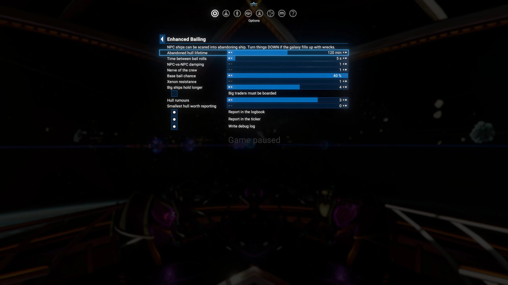
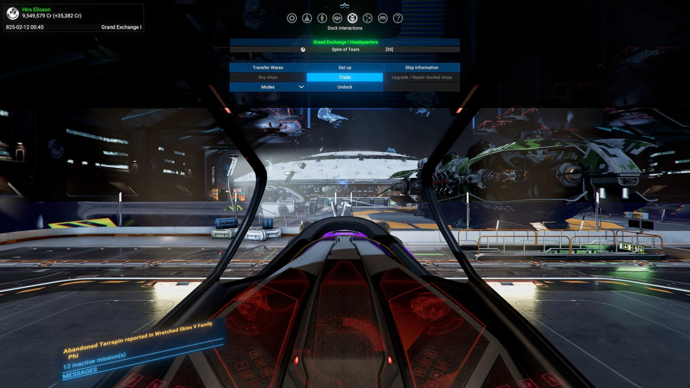
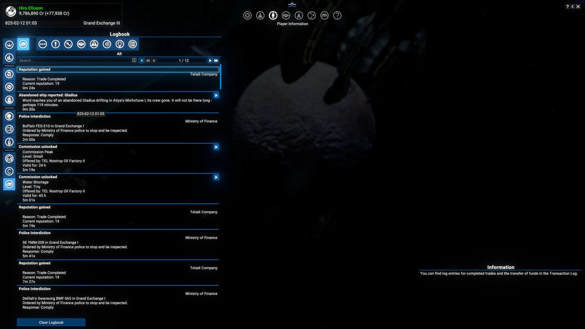

Division IV · X4-Mods
Any fight in the galaxy can now leave a claimable hull — not just yours. Abandoned hulls self-destruct after an hour so space doesn't fill up with wrecks, and word reaches you when one bails nearby.
In the unmodded game, an NPC crew only abandons ship if you are the one shooting. Every other fight — Xenon raids, pirate ambushes, faction wars — ends in explosions and nothing else.
A rewrite of MoonShadowFan's 2021 EnhancedBailing for X4 9.00+, published with their permission. NPC-vs-NPC fights can leave empty hulls drifting, and a cleanup timer keeps their number in check.
A galaxy where a fight next door is worth flying to. Measured defaults, thirteen in-game settings, a reachability filter so you only hear about hulls you could get to, and an uninstall that is just deleting the folder.
What it changes
The mod never touches derelicts placed by the game, by DLCs or by other mods. Only ships that bailed under this mod ever go on the cleanup list.
┌────────────────────────────────────────────┐ │ any fight: NPC vs NPC, or you vs NPC │ │ bail roll every 5 s (vanilla: 30 s) │ └─────────────────────┬──────────────────────┘ v crew walks out ┌──────────────────────────────────────┐ │ hull goes on the cleanup list │ │ with its time of death (+60 min) │ └──────────┬─────────────────┬─────────┘ v v ┌─────────────────┐ ┌──────────────────┐ │ hull rumour │ │ collector, 60 s │ │ in range and │ │ time up and not │ │ reachable? │ │ claimed? │ │ → logbook + │ │ → self-destruct │ │ cyan ticker │ │ │ └─────────────────┘ └──────────────────┘ └──── or you get there first ────┘ claim it → yours, off the list
Why a rewrite
The 2021 mod patched vanilla scripts by position. In 9.00 that position points at a completely different cue, so its remove and add both matched zero nodes — and the bail overhaul had been a silent no-op for years. The 9.x version anchors every patch by cue name and is built as a delta on the current vanilla block, so the 9.00 features the old code predates are all kept.
<!-- 2021: by position — breaks when cues move --> sel="…/cue[24]/actions/do_if[3]" <!-- 9.x: by name — md/notifications.xml --> <replace sel="//cue[@name='PlayerOwnedShipAttacks'] /actions/do_if[@value='$target.iscapturable']"> <!-- 9.x: by name — md/conversations.xml --> <replace sel="//cue[@name='DefaultComm']/actions /do_if/set_value[@name='$maysurrender']">
Settings
Options → Extension Options → Enhanced Bailing — the main Options menu, not the Extensions tab. Sliders take effect immediately and are saved per game. The settings page needs SirNukes Mod Support APIs; without it the mod runs on its defaults.
| Setting | Default | Vanilla | What it does |
|---|---|---|---|
| Abandoned hull lifetime | 60 min | — | How long a hull drifts before self-destructing. 0 = never. |
| Time between bail rolls | 5 s | 30 s | 6× the roll rate. |
| NPC-vs-NPC damping | 2 | 4 | The main dial. 1 = full effect, 4 = unmodded. |
| Nerve of the crew | 2 | — | How much pilot morale resists bailing. |
| Base bail chance | 14 % | — | Flat starting chance before modifiers. |
| Xenon resistance | 3 | 3 | Extra damping for Xenon only. 1 = they bail like anyone. |
| Big ships hold longer | 1 (off) | — | 1–6. How many more rolls an L/XL crew takes to break. |
| Big traders must be boarded | off | — | Every L/XL hull keeps its last crew member, so it can't be found empty. |
| Hull rumours | 3 jumps | — | How far a new hull still gets reported. |
| Smallest hull worth reporting | M | — | Don't ping for abandoned scouts. |
| Report in the logbook | on | — | The persistent entry with the click-to-map link. |
| Report in the ticker | on | — | The one cyan line on screen. |
| Write debug log | off | — | [EB] diagnostics to debuglog.txt. |

Hull rumours
An abandoned ship makes no noise and the galaxy is large. So the mod tells you — quietly, and only about hulls worth the trip. It knows when each hull will die, so the report carries a countdown, and hulls that would expire before you could plausibly get there are never reported at all.

Big ships
The crew draw is scale-free: both bounds are proportional to the ship's own crew, so every class from M upward empties in about 2.3 successful rolls — a 612-berth Ark takes no longer than a 41-berth miner. Two optional settings change that. With both off the mod behaves exactly as before.
A slider from 1 to 6 that divides both bounds by a class factor. S and M are untouched. At the top setting an L crew takes about eight successful rolls to break, and an XL about ten. It decides how long a big crew holds out.
Capital warships have always kept their last crew member. L/XL miners, freighters and builders didn't, so they could be found empty. Tick this and every L/XL hull keeps one — it decides whether the ship can be found empty at all.
If you want something left to board, use the checkbox. A long enough fight still empties a freighter at any slider setting, and below 30 % hull the whole crew can leave at once. The slider is flavour on top.
Install, uninstall, compatibility
Drop enhanced_bailing_9x into the X4 extensions folder, or subscribe on the Workshop. Safe to add to a save already in progress. Needs X4 9.00 or later.
Screenshots
Click any picture to enlarge it.
